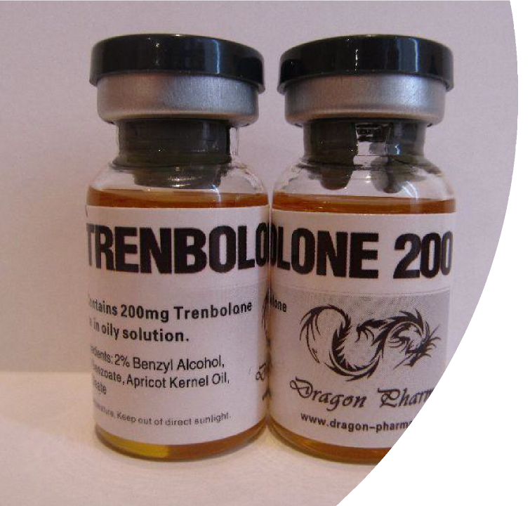

Trenbolone
By Mason O, Emily, and Riley.

What is Trenbolone
Trenbolone acetate is a synthetic anabolic-androgenic
steroid also known as Tren or AAS
Tren has been seen to increase muscle size and strength, for this steroid has been misused for enhancing performance in sports.
In one study, they found that anabolic agents (Trenbolone and other similar steroids.) are the most frequently misused substance in sports with a total of 1823 findings in 2018.
Trenbolone is also seen to increase fat gain.
Trenbolone is also known as roids, gear or juice, finajet,
finaplix.
The History of Trenbolone
Trenbolone use to be a drug to endorse growth hormones in cattle in the mid 1900s. It was used in humans starting in the 1980s with a reduced dose.
The beginning of trenbolone was when Germany first synthesized testosterone in 1935 to medical treat depression. Professional athletes began misusing anabolic steroids during the 1954 Olympics, when Russian weightlifters were given testosterone.
IN the 1980s, these steroids were beginning to extend out into the general public and young men started to use these substances, a lot of the time to increase athletic performance.
Trenbolone works by working up your naturally occurring hormones. It is a chemical to activate testosterone receptors. Once this is stimulated the metabolic reactions takes place and the body is told to increase muscle tissue production.
A way of use is cycling which is periods of use followed by the periods of abstinence.
Another way is pyramiding which is when you use it on a gradually amount to a peak and then tapered down.
Then there is stacking which is when more than trenbolone is used at the same time.
How is it used?
Trenbolone is taken with injections in the side of a muscle which most of the time is in your arm or thigh.
The reason it's injected like that is so that It
works faster to get in your system.
You can also take it in a pill form but it's not likely due to it taking longer to work.
The pain is about the same as a shot except it’s a little worse because there going stright for a muscle sometimes instead of just fat.
How is it Taken?
The side effects
The side effects can be anything from normal day notices to extreme conditions. Depending on how or if you misuse it.
You may have delusions, or aggression spikes.
Cardiovascular system could have high blood pressure, blood clots, artery damage and can cause heart attacks or strokes.
You could be developing tumors in your liver and your skin could produce severs acne and cysts and a lot more.
You can get HIV or AIDS or even hepatitis.
Males can have a greater chance of testicular cancer, baldness, shirking of the genitals and enlargement of the breasts. Women can have their voice deepen, worst skin, excessive hair growth, baldness and even decreasing breasts size.
How illegal is it?
Trenbolone is listed under schedule 3
of the Controlled Substances act.
This makes it illegal to carry, use or sell.
Penalties for a schedule 3 controlled substance can include up to 10 years
in prison and $500,000 in fines for
first time offenders.
dRuGs
(Marion Jones)
Marion is a former professional track/basketball star who got caught using steroids at the 2007 Olympics for steroid use. Marion before getting disqualified ran exceptionally with making 1st place 3 times in the event.
Marion was caught using steroids and disqualified after the races. She was given the gold medal but was taken away from her due to the incident.
As all people should do...
Don't take them, unless your doctor prescribes them to you. This is highly unlikely, and doctors don't usually prescribe this steroid to anyone who is young or healthy.
Trenbolone is not good for any reason other than what a doctor says. There is a ton of horrors that can occur.
If you are seeking the attention of getting in good shape or wanting to become Stonger, please check out 30westfit.com to get help on improving your shape.
Our recommendations
The joke?
It's the Trend alone for me.
Trenbolone more like Post Malone
Mr. Bolden quotes, "Do you even know
what steroids can do to you?“
"Mommmmm I need my protein shake."
Researched Sources:
https://www.frontiersin.org/articles/10.3389/fchem.2020.00435
https://www.drugabuse.gov/publications/research-reports/steroids- other-appearance-performance-enhancing-drugs-apeds/what- history-anabolic-steroid-use
https://www.drugabuse.gov/publications/research-reports/steroids- other-appearance-performance-enhancing-drugs-apeds/what-are- side-effects-anabolic-steroid-misuse
https://www.federalregister.gov/documents/2020/12/16/2020- 25288/schedules-of-controlled-substances-exempt-anabolic-steroid- products
https://adf.org.au/drug-facts/steroids/
Informative research.
Article Sources:
B Schiffer, A Daxenberger, K Meyer, H. Meyer. “The Fate of Trenbolone Acetate and Melengestrol Acetate after Application as Growth Promoters in Cattle: Environmental Studies.” National Institute of Environmental Health Sciences, U.S. Department of Health and Human Services, 1 Nov. 2001, ehp.niehs.nih.gov/doi/abs/10.1289/ehp.011091 145
Fred Hartgens, Harm Kuipers. "Effects of Androgenic-
Anabolic Steroids in Athletes." SportsMed-AAS
February 2004, https://www.researchgate.net/publication/ 8460137_Effects_of_Androgenic- Anabolic_Steroids_in_Athletes
DUCHAINE, DANIEL, QFAC, Inc. “UNDERGROUND STEROID HANDBOOK II.” Incorporating material from the original Underground Steroid Handbook Ultimate Muscle Mass and the USH Updates #1-10. Anasci.org, Daniel Duchaine, 1989, www.anasci.org/ebooks/USH%20II.pdf
Article Sources
+
0
Mason's Researched Article Information
•
The steroids trenbolone acetate, {also known as TbA.) like melengestrol acetate,
{also known as MGA.) are licensed as
growth promoters for farm animals in several meat exporting countries. Little is known about the fate after excretion by the animal. Animals were tested and found that the hormone residues in samples including separation of metabolites and interfering substances. Not all of these were 100% correct as most of it was scientists testing and researching the ways of drugs in animal growth development. Since it was tested on animals, people began realizing it might have a greater effect on humans, but came backlash and saw that there are more bad term effects than good ones.
+
0
Emily's Researched Article Information
The range in effects from heart damage, Depression, liver damage, increased sexual drive, scalp hair loss, acne, heart attacks, Infertility, Infections such as Hepatitis's and HIV. Even some types of cancer such as testicular and others, and Some people have even reported cases of being delusions and severe aggression. In some cases, it can cause tumors, Artistry damage increase size of male breast size and decrease in women. If taken at a young age it can even cause you to lose height that you would have grown into.
•

+
0
Riley's Researched Article Information
Was used as early as 1963 but was only marketed for human consumption around the 1980s.
Was originally used as a livestock steroid, they cut the dose down significantly for human consumption.
Trenbolone is listed under section 3 of the Controlled Substances act which puts it in the same class as things like ketamine and other anabolic steroids.
•